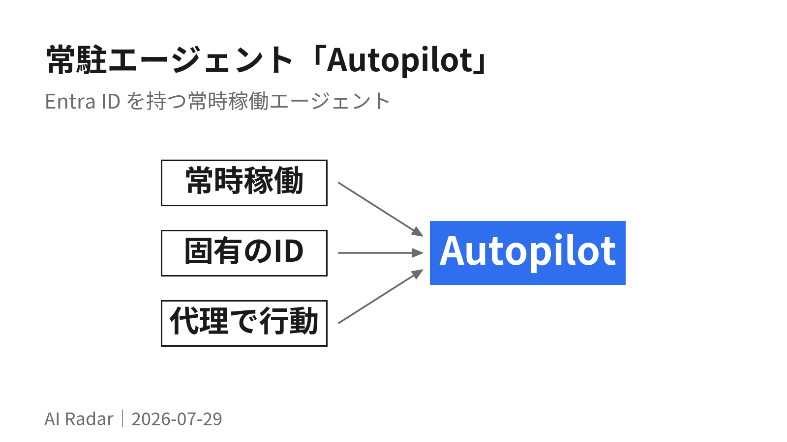

常駐エージェント「Autopilot」の登場

Microsoft が Autopilot という新カテゴリを定義した。呼ばれてから答えるのではなく、常時動いて自分から動くエージェント。
技術的な核は「エージェントが自分の Entra ID を持つ」こと。共有サービスアカウントではないので、誰の権限で何をしたかが監査できる。ここが企業導入の分かれ目になる。
01Autopilot は「プロンプトを待たない」エージェント
Microsoft が Autopilots という新しいエージェントのカテゴリを発表した。定義は3つ。常時稼働する／自分自身のアイデンティティを持つ／ユーザーに代わって行動する。
詳しく読む
バックグラウンドで動き続け、アプリやシステムをまたいで仕事の進み方を理解し、毎回プロンプトを与えなくても行動する。従来のCopilotが「聞かれたら答える」だったのに対し、Autopilotは「answering で止まらず follow-through する」ことを狙っている。
自分の業務のうち「気づけたはずなのに気づけなくて詰まった」ものを探す。止まった意思決定、期限が近い割に着手していない案件、返していないメール。Autopilotが狙っているのはそこで、これは業務の棚卸し観点としてそのまま使える。
出典: Introducing Microsoft Scout: Your always-on personal agent
02Microsoft Scout がその第1号
Autopilot の最初の実装が Microsoft Scout。Teams / Outlook / OneDrive / SharePoint に繋がり、チャット・メール・カレンダー・連絡先を横断する。操作はTeamsから行い、デスクトップアプリ経由でブラウザ・ローカルリソース・MCPサーバーまで到達範囲を広げられる。
詳しく読む
やることは調整業務の削減に寄っている。タイムゾーンをまたいだ会議の設定、重要な会議のフラグ立て、事前資料の生成、締切から逆算したカレンダーのブロック、そして「止まっている意思決定」のような risk の検知。
実装ベースは OpenClaw のオープンソース技術。Microsoft はポリシー適合性の検証機構を upstream に還元するとしている。
MCP対応が入っているのが実務的に効く。社内ツールをMCPで繋げば、Scoutの守備範囲がそのまま広がる。 どのツールをMCP化すると一番効くかは、今のうちに考えておく価値がある。
03企業導入の鍵は「エージェント1体ごとにEntra ID」
ここが今回いちばん重要な設計判断。すべてのエージェントが、共有の匿名サービスアカウントではなく、統制された自分自身の Entra ID で動く。 結果として、エージェントがやった仕事は「ディレクトリが既に知っている実行主体」に紐づいて追跡できる。
詳しく読む
その上に3層。
- 資格情報 — タスク単位にスコープを絞り、ログや診断からは秘匿される
- アクセス制御 — 承認済みのリソースと宛先にしか到達できない。センシティブな操作は人間の承認を挟める
- データ保護 — Microsoft Purview の秘密度ラベルとDLPが、送信・書き込みの前にその場で適用される
Scout はこれらを迂回せず、組織が既に設定した保護の内側で動く。
AIを社内に広げるとき最初に詰まるのが「誰の権限で動いているのか」。エージェントに個別のIDを与えて監査可能にするという考え方は、Microsoft製品を使っていなくても設計として真似できる。前号で触れた「入れてよい情報の線引き」の、その次に来る論点。
04入手性はまだ限定的
Microsoft社内では既にデスクトップ版の早期体験が使われている。外部にはプライベートプレビューと Frontier 組織向けの実験的リリースという段階。
詳しく読む
利用条件は Frontier への登録、Intune のポリシー設定、オプトインの表明。その上で GitHub Copilot ライセンスを持つユーザーがダウンロードできる。
今すぐ触れるものではない。ただ「Autopilot」という言葉は今後のMicrosoft製品の説明に頻出するので、Copilot（応答型）との区別だけは押さえておくと後が楽。
同時期に発表された Work IQ API（エージェントに業務文脈を与える基盤）と Copilot Cowork（6/16 GA）は、今回は本文を読めていないため見送った。Scout の文脈理解は Work IQ が支えているので、次に読むならここ。
この号は日次運用の取りこぼしを埋めるために後から作成。元記事の公開は 2026-06-02。